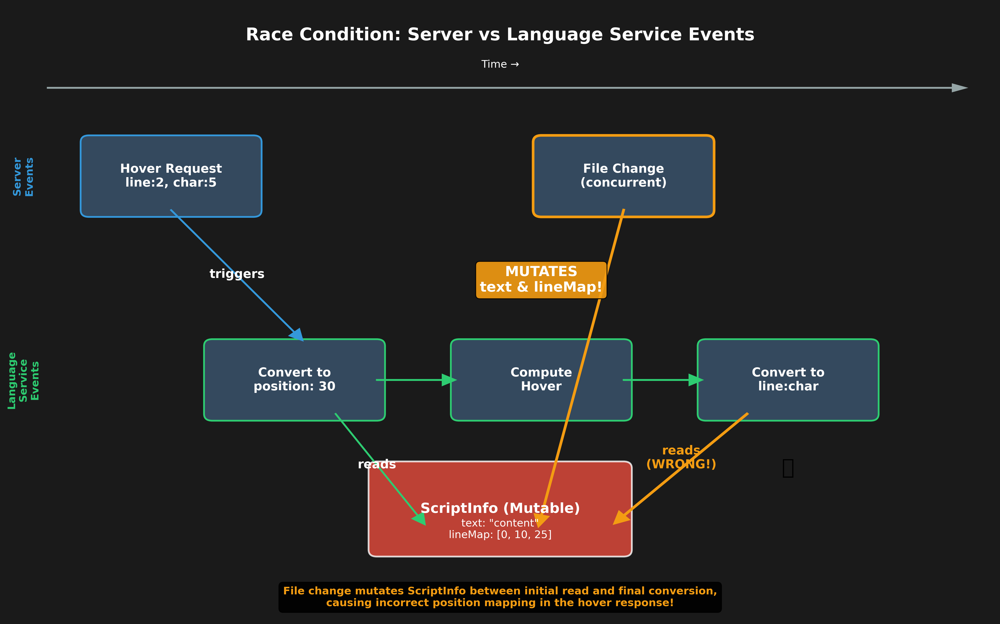
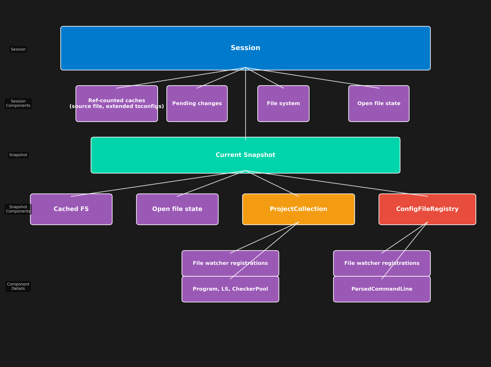
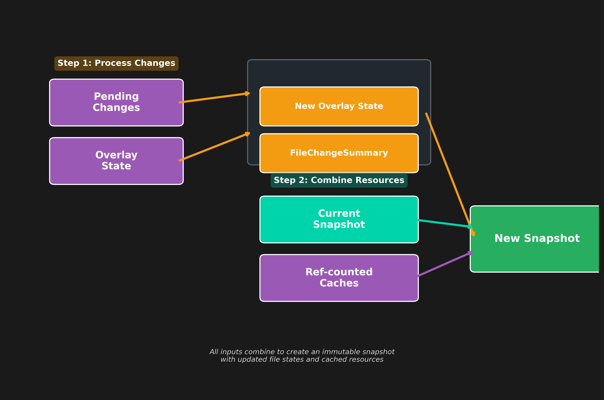
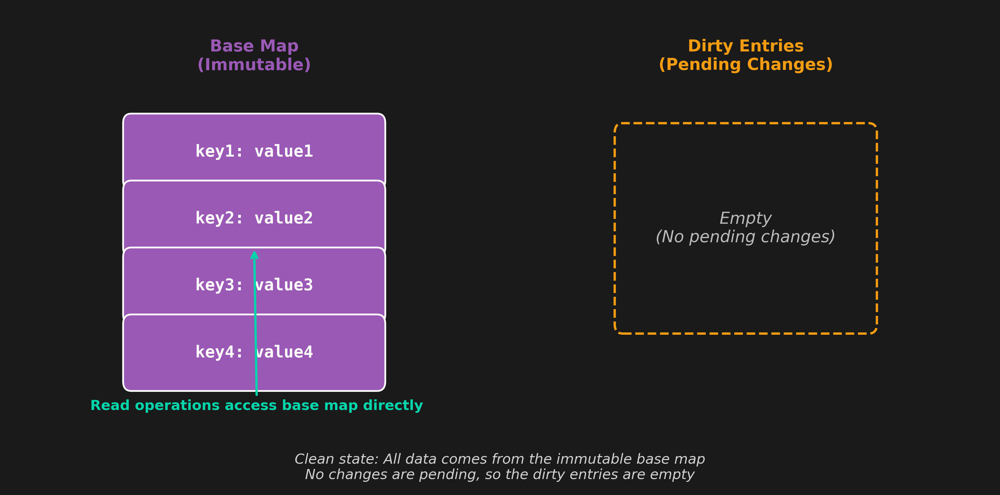
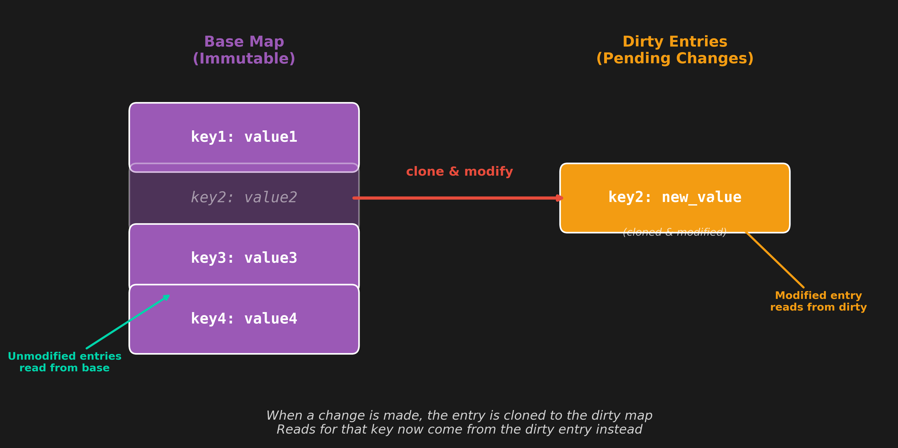
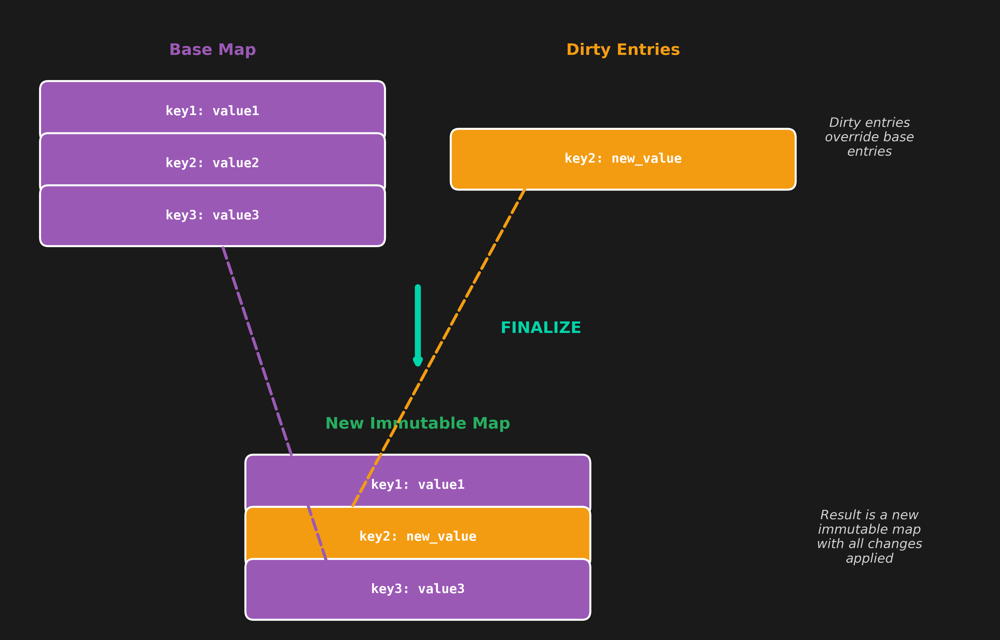
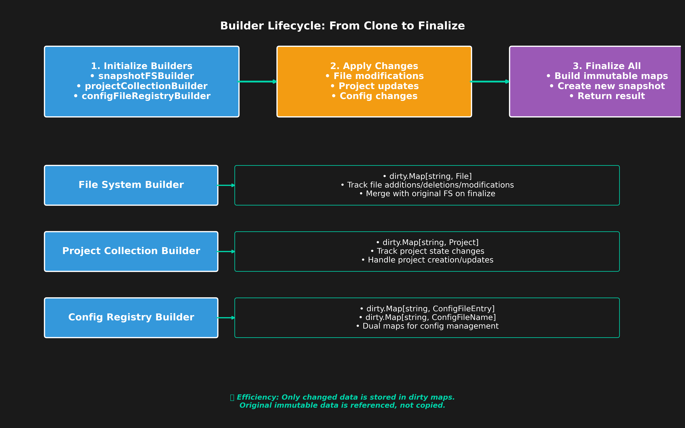
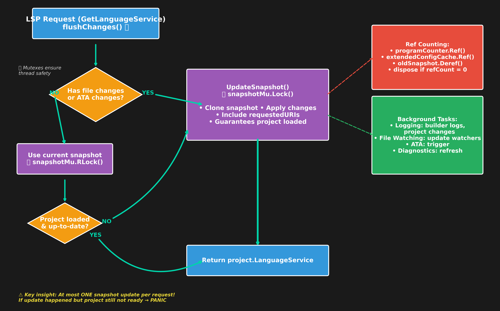

📸 Snapshot LSP
with diagrams by Copilot
The problem we're solving
- Old code relied on mutable data structures
- Even with mutexes, we had data races
- Code was becoming unmanageable
- Hard to integrate another client
(MCP or LSP plugin with API access)
Race condition example: ScriptInfo

The solution: Immutable snapshots
A snapshot is immutable state that can be read to serve a request or cloned to produce a new state capable of serving that request.
📦 Programs were already immutable - this gets us pretty far!
But we needed to make these things immutable too:
- 📄 File state (both open and closed)
- 🗂️ Projects (which ones are loaded and what do they contain)
- ⚙️ ParsedCommandLine (loaded state)
Operating on snapshots: No side effects
When operating on a snapshot, we must produce no side effects:
❌ Forbidden
- 📁 File watching
- 📝 Logging (ideally)
- 🚀 Project loading
- 📦 ATA (Automatic Type Acquisition)
✅ Pure operations
- 🧮 Use language service
- 📚 Populate internal caches
Result: Concurrent requests can operate safely on the same snapshot! 🎉
LSP server hierarchy

Cloning a snapshot

The dirty.Map pattern
How do we efficiently track changes to immutable data?
📝 dirty.Map - A pattern for layering changes on top of immutable base data
- 🏗️ Base Map: Immutable foundation data
- 📋 Dirty Entries: Pending changes/overrides
- 🔄 Read-through: Check dirty first, then base
- ✨ Finalization: Creates new immutable map with changes applied
dirty.Map - Clean state

dirty.Map - With pending changes

dirty.Map - Finalization process

dirty.MapEntry Change()
entry.Change(func(file *diskFile) {
file.content = content
file.hash = sha256.Sum256([]byte(content))
file.needsReload = false
})
func (e *MapEntry[K, V]) Change(apply func(V)) {
if e.delete {
panic("tried to change a deleted entry")
}
if !e.dirty {
e.value = e.value.Clone()
e.dirty = true
e.m.dirty[e.key] = e
}
apply(e.value)
}
Builder Pattern: Snapshot Construction

LSP request processing flow
